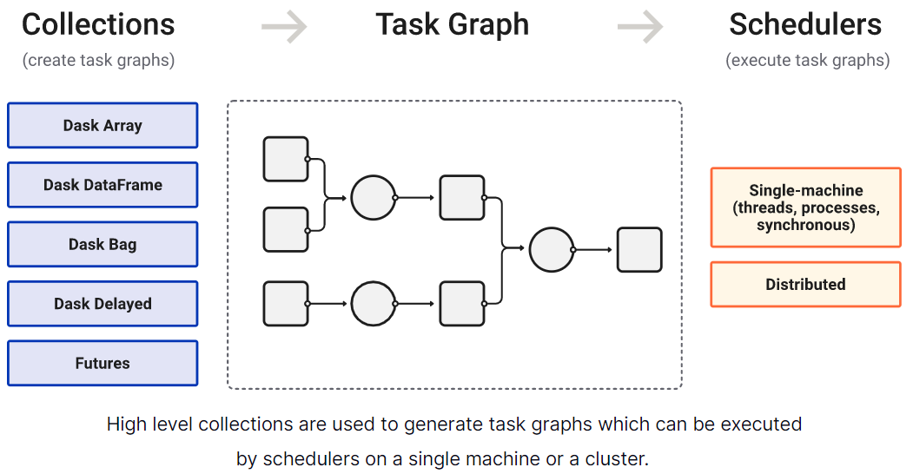

4. Parallelize Flood Mapping#
Because of the amount of data and the importance of real-time application, it is important to parallelize the flood mapping. We used the Dask python library for parallelizing the flood mapping. Typically, parallelization on Dask is done using Dask collections (dask array, dask dataframe, etc.) as shown below.

With tiled relations, flood mapping parallelization can be done by building a custom directed acyclic graph (DAG) that is executed by dask schedulers on a single machine or a cluster.
# from MapFloodDepthWithTilesAsDag()
dag = {}
for tid,fppExtent in zip(tileIds,fppExtents):
dag[f'MapOneTile_{tid}'] = (MapOneTile,libFolder,libName,tid,fppExtent,cellSize,libSr,fileFormat,outMapFolder,fspDof,aoiExtent)
dagRootName = 'MapTiles'
dag[dagRootName] = (GetTileTifs,list(dag.keys()))
Parallelization experiments were one on Microsoft Planetary Computer and the operational system (i.e., the dashboard) is parallelized on a single machine with 8 cores.
In addition to Dask, there are Ray and other other python parallelization options. Those options should be explored in the future.
4.1. Mapping Issues#
MinDtf for all the libraries were mapped and mosaic as one TIF file (mindtf.tif)
No flood map with current gauge stage observation
nemaha and lowrep both only have two gauges with current observation. However, current stage observation is negative and cannot produce a map
lowrep has 4 gauges with categorical stages (i.e., ‘Major’, ‘Moderate’, ‘Flood’ and ‘Action”). But only two of the gauges (CNKK1 and CYCK1) have regular observation and forecast.
With tiled libraries, flood mapping can be parallelized using either on-premise or cloud computational resources such as Planetary Computer, Pangeo, GEE,and CyberGISX.
4.2. Test done on PC, office desktop computer and KARS server#
Parallelization using PC’s Dask Gateway
Mapping the tiles only take 19% of the time with 20 workers
Library files are stored in Azure Blob Storage using a free trial Azure Storage Account (fldpln). 3 libraries (spring, lowark, and neosho) are uploaded for test and each library is stored in a Container.
All the code related with reading/writing files (.snz, .csv, .tif) were rewritten to work with blob storage. This is the biggest change in the code.
Separated the mosaic function from the MapFloodDepthWithTiles() function as
It’s necessary to create the DAG
It’s probably not necessary to mosaic the tiles
Parallelization using a local cluster on PC (32G Ram + 4 cores) and office computer (32G Ram + 6 cores)
Mapping the tiles takes 44% of the time (spring and lowark) with 4 workers
Libraries can be stored either as local file or in Azure Blob Storage
Not much change in code when using local library files
Need to test more on office desktop computer which has 32G RAM and 6 cores. Having memory (?) issues with five large libraries. Set processes=False seemed solving the problem.
Parallelization using a local cluster on KARS production server (4 workers, 47G RAM) has no issue to generate the tiles for MinDtf (1301 tiles)
See Excel file (LocalBlobParalleleComparison) for comparison of the parallelization platforms.
4.3. Stream Flood Maps#
Flood mapping is done using the task_lib2map_*.py which has 4 arguments: outputMapFolder,mapType, mapSubtype, mapFolderName. An example of using the script is:
>python fldpln_lib2map.py D:\projects_new\fldpln\kansas\maps Forecast 0 fcst_000_20220616_1500
Current and Forecast Maps
Main map type is ‘Forecast’ and subtypes are integers from 0 to 14 indicating the forecast length in days. 0 length is current observation.Special Maps
Main map type is ‘Special’ and four subtypes are:‘MinDtf’: minimum FSP depth to flood a FFP
‘NumOfFsps’: number of FSPs that can flood a FFP
‘Depression’: depression at a FFP
String of a numeric value: the constant stage (in foot)) assigned to all FSPs
Historical Flood Maps
Main map type is ‘Historical’ and four subtppes include: ‘Action’, ‘Flood’, ‘Moderate’, ‘Major’Local cluster in Python script CAN ONLY RUN in the ‘if __name__ == ‘__main__’:` block! See this on the issue.
When close client and local cluster using client.close()+.shutdown() and cluster.close(), system shows the warning “distributed.nanny - WARNING - Worker process still alive after 3.999998664855957 seconds, killing”. See this on using python context manager (i.e., the with keyword). However, it still shows the same warning!
Using a local cluster in a Notebook is easier but it runs slower than in a Python script. Also, Notebook cluster gets slower and slower (not sure why?)
4.4. Reservoir flood mapping (not parallelized yet!)#
Reservoir water/flood maps are mapped using the gauge elevation at each reservoir with script fldpln_res2map.py.
The reservoir DEM/bathymetry data (from David) are in web Mercator coordinate system? why (for serving it)?
4.5. Issues#
When exits the script, whether uses single CPU or a local cluster, system shows “Fatal error condition occurred in D:\bld\aws-c-io_1633633258269\work\source\event_loop.c:74: aws_thread_launch(&cleanup_thread, s_event_loop_destroy_async_thread_fn, el_group, &thread_options) == AWS_OP_SUCCESS”. Not sure what is happening but t seems to me that the call to MapFloodDepthWithTiles() caused problem. However, the script seems generating correct maps!
Scatter data? System shows “Map ksrv flood depth using LocalCLuster … C:\Users\lixi\Miniconda3\envs\fldpln\lib\site-packages\distributed\worker.py:4504: UserWarning: Large object of size 1.08 MiB detected in task graph: (‘D:\projects_new\fldpln\kansas\data\KS_tiled … columns], None) Consider scattering large objects ahead of time with client.scatter to reduce scheduler burden and keep data on workers” when mapping ksrv.
4.6. Runs for Historical Flood Maps#
local cluster with 4 cores/workers each has 32G RAM
4.6.1. “Action” Flood Map (503 tiles)#
Total processing time (minutes): 6.097 (script), 14.894 (Notebook)
Individual library mapping time:
{‘bigblue’: 0.247, ‘chik_saltfork_medlodg’: 0.039, ‘cotneo’: 0.136, ‘ksrv’: 0.823, ‘litark’: 0.051, ‘lowark’: 0.29, ‘lowrep’: 0.119, ‘mdc’: 0.232, ‘midkan’: 0.122, ‘midsol’: 0.028, ‘morv’: 1.006, ‘nemaha’: 0.042, ‘neosho’: 0.665, ‘ninnescah’: 0.084, ‘osagemarmaton’: 0.046, ‘smoksalsol’: 0.453, ‘spring’: 0.079, ‘upark’: 1.034, ‘upkan’:0.227, ‘uprep’: 0.077, ‘upsal’: 0.054, ‘upsmoky’: 0.04, ‘upsol’: 0.017, ‘verdigriscaney’: 0.1, ‘walnut’: 0.085}
4.6.2. “Flood” Flood Map (528 tiles)#
Total processing time (minutes): 6.208 (script), 18.759 (Notebook)
Individual library mapping time:
{‘bigblue’: 0.255, ‘chik_saltfork_medlodg’: 0.03, ‘cotneo’: 0.125, ‘ksrv’: 0.896, ‘litark’: 0.049, ‘lowark’: 0.299, ‘lowrep’: 0.117, ‘mdc’: 0.225, ‘midkan’: 0.117, ‘midsol’: 0.027, ‘morv’: 1.016, ‘nemaha’: 0.045, ‘neosho’: 0.622, ‘ninnescah’: 0.076, ‘osagemarmaton’: 0.046, ‘smoksalsol’: 0.445, ‘spring’: 0.082, ‘upark’: 1.147, ‘upkan’: 0.206, ‘uprep’: 0.094, ‘upsal’: 0.05, ‘upsmoky’: 0.03, ‘upsol’: 0.015, ‘verdigriscaney’: 0.107, ‘walnut’: 0.085}
4.6.3. “Moderate” Flood Map (553 tiles)#
Total processing time (minutes): 8.296 (script), 9.179 (Notebook)
Individual library mapping time:
{‘bigblue’: 0.326, ‘chik_saltfork_medlodg’: 0.037, ‘cotneo’: 0.16, ‘ksrv’: 1.236, ‘litark’: 0.063, ‘lowark’: 0.385, ‘lowrep’: 0.166, ‘mdc’: 0.409, ‘midkan’: 0.185, ‘midsol’: 0.031, ‘morv’: 1.32, ‘nemaha’: 0.046, ‘neosho’: 0.72, ‘ninnescah’: 0.088, ‘osagemarmaton’: 0.057, ‘smoksalsol’: 0.633, ‘spring’: 0.121, ‘upark’: 1.32, ‘upkan’: 0.411, ‘uprep’: 0.119, ‘upsal’: 0.051, ‘upsmoky’: 0.04, ‘upsol’: 0.018, ‘verdigriscaney’: 0.244, ‘walnut’: 0.11}
4.6.4. “Major” Flood Map (614 tiles)#
Total processing time (minutes): 12.229 (script), 42.985 (Notebook)
Individual library mapping time:
{‘bigblue’: 0.53, ‘chik_saltfork_medlodg’: 0.05, ‘cotneo’: 0.28, ‘ksrv’: 1.806, ‘litark’: 0.081, ‘lowark’: 0.486, ‘lowrep’: 0.349, ‘mdc’: 0.83, ‘midkan’: 0.39, ‘midsol’: 0.037, ‘morv’: 1.779, ‘nemaha’: 0.106, ‘neosho’: 1.287, ‘ninnescah’: 0.098, ‘osagemarmaton’: 0.061, ‘smoksalsol’: 1.0, ‘spring’: 0.152, ‘upark’: 1.635, ‘upkan’: 0.526, ‘uprep’: 0.169, ‘upsal’: 0.056, ‘upsmoky’: 0.071, ‘upsol’: 0.02, ‘verdigriscaney’: 0.286, ‘walnut’: 0.143}
4.7. Parallelization on Microsoft Planetary Computer (PC)#
Microsoft PC provides a cloud computing platform to scale geospatial data analysis. It provides big geospatial datasets and distributed computating capability through the Dask Gateway.
What’s difference between Dask and Dask Gateway? See this on why using Dask Gateway in Pangeo/PC.
4.7.1. Local vs blob storage files#
To experiment with the platform, several (3?) tiled libraries were uploaded to both PC virtual machine and Azure Blob Storage in order to use the workers from a Dask Gateway. Note that gateway cluster workers cannot see “local files” on the PC virtual machine. They can only access the files in the blob storage. This is different from a Dask local cluster which can access local files.
In the experiment, the baseline is the time used to map the tiles and mosaci the tiles on PC’s local file system. Below are the prilimilary results:
With a dask cluster of 20 workers (8G RAM per worker, tiles are from blob storage), the time to map the tiles is about 19%, the time to mosaic the tiles is 744%, and total time is 47% of the baseline time.
Use the same PC virtual machine (32G RAM) with lob storage, it tooks more time than the baseline time which stores the tiles in a local file system
tile maps (126%), mosaic (740%), total (151%)
Use a dask cluster of 20 workers and compare with the PC virtual machine using tiles on the blob storage
tile maps (15%), mosaic (98%), total (30%)
4.7.2. Parallelization using Dask Gateway cluster#
The parallelization experiment on a Dask Gateway cluster was done using a custom DAG. In addition to this approach, there are several other ways to parallelization using the Dask Gateway.
Use dask collections, for example dask.dataframe and dask-geopandas
Build custom collections that implement the dask interface, for example xarray and xarray-spatial
4.7.3. Notes on using Dask Gateway on PC#
Connection to a dask cluster (See my email exchange with Tom @ PC regarding this)
On Dask Gateway 0.9.0 Usage documentation, it’s not clear to me how the computations (i.e., dask.array.mean()) know/use the cluster, i.e., there is no code that connects the computation with the client!
In PC Quickstarts Scale with Dask example, there is also no code that connectes the computation (i.e., xarray.mean()) with the client from a Dask Gateway.
Does the PC Quickstarts Reading Tabular Data example (i.e., dask.dataframe.read_parquet()) use a backend Dask Gateway to scale file reading? How can we do this explicitly with a Dask Gateway we created?
The PC Zonal statistics example which uses a “local Dask cluster” (i.e., dask.distributed runs basically the VM on the cloud?) to compute zonal stats. There is also no code that connects the computation with the local cluster! How does xarray-spatial use the cluster as xarray-spatial only optimize the xarray using Numba! (zone and value rasters are both dask.arrays?) Can we run it on a Dask Gateway cluster?
PC Module pystac_client and stackstac somehow initialize a cluster when loading the data (or search an existing cluster created)? How can we configure the cluster if it’s created by default?
How do dask.dataframe, dask_geopandas and xarray-spatial implement their parallelization? Xarray-spatial uses Numba (just-in-time optimization but not parallelized?)
Dask examples
4.8. Implement Map Compute Engine using Dask?#
Map as a custom dask collection
Neighborhood as custom dask collection
Stored neighborhoods (such as FSP-FPP relations)
Functional neighborhoods